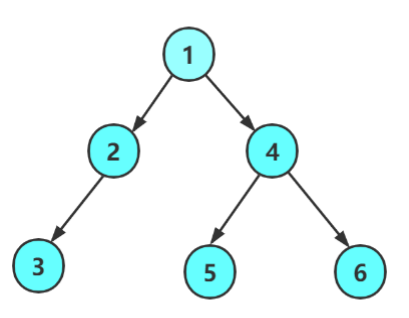
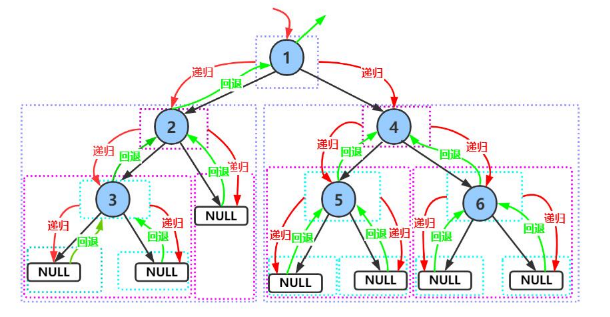

该系列为本人的学习笔记，主要由本人整理书写而成。部分内容来自教材、视频课程等，不能保证完全原创性。
萌新的学习笔记，写错了恳请斧正。
# 链式二叉树
这篇笔记我们讨论基于链式二叉树，其节点的数据结构如下：
typedef int BTDatatype; | |
typedef struct BTNode | |
{ | |
BTDataType data; | |
struct BTNode* left; | |
struct BTNode* right; | |
} BTNode; |
# 二叉树的遍历
先了解关于二叉树的遍历再去了解二叉树的创建会更轻松一点。
二叉树的遍历基本分两类，一类是深度优先的，另一类是广度优先的。
对于深度优先的遍历，又分为前序遍历、中序遍历、后序遍历；对于广度优先的遍历，只有层序遍历。
# 前序遍历（PreOrder Traversal）
从根节点开始，对于每一个子树，先访问其根节点，再访问其左子树和右子树。
比方说，对于下面这个二叉树：

flowchart TD | |
a("我们先访问其根节点1，然后是其左子树") | |
b("对于其左子树，我们还是先访问其根节点2，然后是其左子树") | |
c("我们继续访问该节点的左子树3，然后是3的左子树") | |
d("发现3的左子树为空，那么返回访问3的右子树") | |
e("3的右子树也为空，这是2的左子树访问完了就轮到2的右子树了") | |
f("2的右子树为空，那么1的左子树就访问完了轮到1的右子树") | |
g("1的右子树为4，访问完根节点4后访问其左子树5") | |
h("5的左子树右子树为空，那么4的左子树就访问完了") | |
i("最后是4的右子树6") | |
a-->b-->c-->d-->e-->f-->g-->h-->i |
所以最终节点的访问顺序为：
1-->2-->3-->N-->N-->N-->4-->5-->N-->N-->6-->N-->N
下面这张图可能更直观些：

下面给出其实现（递归的思想）：
void BinaryTreePrevOrder(BTNode* root) | |
{ | |
if (root == NULL) | |
{ | |
return; | |
} | |
printf("%c ", root->data); | |
BinaryTreePrevOrder(root->left); | |
BinaryTreePrevOrder(root->right); | |
} |
# 中序遍历（InOrder Traversal）
中序遍历对每一个子树则是先访问其左子树，随后是根节点和右子树。
对于上方的示例，如果用中序遍历，顺序就会变为：
N-->3-->N-->2-->N-->1-->N-->5-->N-->4-->N-->6-->N
下面给出其实现：
void BinaryTreeInOrder(BTNode* root) | |
{ | |
if (root == NULL) | |
{ | |
return; | |
} | |
BinaryTreeInOrder(root->left); | |
printf("%c ", root->data); | |
BinaryTreeInOrder(root->right); | |
} |
# 后序遍历（PostOrder Traversal）
同理，后序遍历就是最后访问根节点，对于上例的顺序为：
N-->N-->3-->N-->2-->N-->N-->5-->N-->N-->6-->4-->1
下面给出其实现：
void BinaryTreeInOrder(BTNode* root) | |
{ | |
if (root == NULL) | |
{ | |
return; | |
} | |
BinaryTreeInOrder(root->left); | |
BinaryTreeInOrder(root->right); | |
printf("%c ", root->data); | |
} |
# 层序遍历（LevelOrder Traversal）
层序遍历就是逐层的一个一个元素遍历，与前几个一条路走到底再拐回来的遍历方式不同。
想要实现二叉树的层序遍历，就不仅仅是递归这么简单了，我们需要借助之前学的数据结构：队列。
层序遍历的步骤：
- 初始化队列： 首先，将根节点放入队列中。
- 遍历队列： 当队列不为空时，重复以下步骤：
- 从队列中取出一个元素（节点）。
- 访问这个节点。
- 如果这个节点有左子节点，则将左子节点放入队列。
- 如果这个节点有右子节点，则将右子节点放入队列。
通过这种方式，可以保证每个节点都按照层序被访问一次，同时每个节点只会被放入队列一次，从而实现二叉树的层序遍历。
对于这个方法的理解，ChatGPT 给出了一个比较生动的例子：
想象一下，你在组织一场大型的派对游戏，游戏的目标是确保每个人都能按顺序获得一个气球。派对的参与者按照到达的顺序站成一列，每个人都可能带着一两个朋友。在这个比喻中，每个参与者就像是树中的一个节点，他们带来的朋友分别对应于这个节点的左右子节点。
- 开始游戏： 游戏开始时，你手里只有一个气球，而第一个参与者（对应于树的根节点）站在你面前。你将这个气球给了他，并询问是否有朋友一起来。他回答说带了两个朋友（左右子节点）。
- 组织队列： 为了管理游戏的顺序，你拿出一个大篮子（对应于队列），让第一个参与者的朋友们按照他们被介绍的顺序站到篮子后面。现在，篮子里有两个人在等待气球。
- 进行派对游戏： 接下来，你从篮子（队列）的前端取出一个人（节点），给他一个气球，并询问他是否也有带朋友来。如果有，他的朋友们也按顺序加入到篮子的末尾。
- 重复步骤： 按照这个流程，你一直重复，总是从篮子的前端取人，给他气球，然后将他的朋友们（如果有的话）加入到篮子的末尾。
通过这个过程，每个参与者都会按照他们到达派对的顺序获得气球。同样地，在二叉树的层序遍历中，我们利用队列这一数据结构，确保了每个节点都能按照它们在树中的层级顺序被访问。就像在游戏中一样，通过不断地将朋友（子节点）加入队列并按顺序访问，我们能够遍历树中的每一个节点，从而实现层序遍历。
下面给出其实现：
void BinaryTreeLevelOrder(BTNode* root) | |
{ | |
Queue q; | |
QueueInit(&q); | |
if (root != NULL) | |
{ | |
QueuePush(&q, root); | |
} | |
while (!QueueEmpty(&q)) | |
{ | |
BTNode* front = QueueFront(&q); | |
QueuePop(&q); | |
if (front->_left != NULL) | |
{ | |
printf("%c ", front->_data); | |
QueuePush(&q, front->_left); | |
QueuePush(&q, front->_right); | |
} | |
else | |
{ | |
printf("NULL "); | |
} | |
} | |
printf("\n"); | |
QueueDestory(&q); | |
} |
# 二叉树的创建与销毁
我们以一道题为例：
编一个程序，读入用户输入的一串先序遍历字符串，根据此字符串建立一个二叉树（以指针方式存储）。 例如如下的先序遍历字符串： ABC##DE#G##F### 其中 “#” 表示的是空格，空格字符代表空树。建立起此二叉树以后，再对二叉树进行中序遍历，输出遍历结果。
有了前面的内容这里就很好完成了，实现如下：
BTNode* BuyBTNode(BTDataType x) | |
{ | |
BTNode* new = (BTNode*)malloc(sizeof(BTNode)); | |
if (new == NULL) | |
{ | |
perror("malloc"); | |
exit(EXIT_FAILURE); | |
} | |
new->_data = x; | |
new->_left = NULL; | |
new->_right = NULL; | |
return new; | |
} | |
BTNode* BinaryTreeCreate(BTDataType* a, int n, int* pi) | |
{ | |
if (*pi >= n || a[*pi] == '#') | |
{ | |
(*pi)++; // 跳过当前的 '#' 或越界的元素 | |
return NULL; | |
} | |
BTNode* root = BuyBTNode(a[(*pi)++]); | |
root->_left = BinaryTreeCreate(a, n, pi); | |
root->_right = BinaryTreeCreate(a, n, pi); | |
return root; | |
} |
而二叉树的销毁就更加简单了：
void BinaryTreeDestroy(BTNode** root) | |
{ | |
if (*root == NULL) | |
{ | |
return; | |
} | |
BinaryTreeDestroy(&(*root)->_left); | |
BinaryTreeDestroy(&(*root)->_right); | |
free(*root); | |
*root = NULL; | |
} |
# 其他二叉树相关
// 二叉树节点个数 | |
int BinaryTreeSize(BTNode* root) | |
{ | |
if (root == NULL) | |
{ | |
return 0; | |
} | |
return 1 + BinaryTreeSize(root->_left) + BinaryTreeSize(root->_right); | |
} | |
// 二叉树叶子节点个数 | |
int BinaryTreeLeafSize(BTNode* root) | |
{ | |
if (root == NULL) | |
{ | |
return 0; | |
} | |
if (root->_left == NULL && root->_right == NULL) | |
{ | |
return 1; | |
} | |
return BinaryTreeLeafSize(root->_left) + BinaryTreeLeafSize(root->_right); | |
} | |
// 二叉树第 k 层节点个数 | |
int BinaryTreeLevelKSize(BTNode* root, int k) | |
{ | |
if (root == NULL) | |
{ | |
return 0; | |
} | |
if (k == 1) | |
{ | |
return 1; | |
} | |
return BinaryTreeLevelKSize(root->_left, k - 1) + BinaryTreeLevelKSize(root->_right, k - 1); | |
} | |
// 二叉树查找值为 x 的节点 | |
BTNode* BinaryTreeFind(BTNode* root, BTDataType x) | |
{ | |
if (root == NULL) | |
{ | |
return NULL; | |
} | |
if (root->_data == x) | |
{ | |
return root; | |
} | |
BTNode* ret = BinaryTreeFind(root->_left, x); | |
if (ret != NULL) | |
{ | |
return ret; | |
} | |
return BinaryTreeFind(root->_right, x); | |
} | |
// 判断二叉树是否是完全二叉树 | |
int BinaryTreeComplete(BTNode* root) | |
{ | |
Queue q; | |
QueueInit(&q); | |
if (root != NULL) | |
{ | |
QueuePush(&q, root); | |
} | |
while (!QueueEmpty(&q)) | |
{ | |
BTNode* front = QueueFront(&q); | |
QueuePop(&q); | |
if (front == NULL) | |
{ | |
break; | |
} | |
QueuePush(&q, front->_left); | |
QueuePush(&q, front->_right); | |
} | |
while (!QueueEmpty(&q)) | |
{ | |
BTNode* front = QueueFront(&q); | |
QueuePop(&q); | |
if (front != NULL) | |
{ | |
QueueDestroy(&q); | |
return 0; | |
} | |
} | |
QueueDestroy(&q); | |
return 1; | |
} |